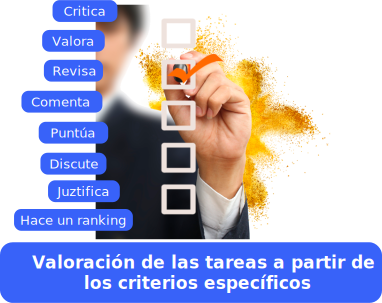

Es la utilización de las representaciones abstractas en casos particulares y concretos.
Resolver problemas mediante la aplicación de conocimiento, hechos o técnicas.
Supone la aplicación del pensamiento deductivo e inductivo.
Hacer uso de la información recibida y aprendida para solucionar problemas.
Resultado de aprendizaje:
Nivel superior
Enfocados en la evaluación

Estrategia o metodología de aprendizaje
Técnica de evaluación
Instrumento de evaluación
Evidencia de aprendizaje
Aprendizaje basado en pensamiento de diseño.
Aprendizaje basado en juegos.
Aprendizaje basado en proyectos.
Aprendizaje basado en investigación.
Aprendizaje basado en retos.
Aprendizaje basado en servicio.
Técnicas de análisis de producciones y analisis de desempeño
Ensayo argumentativo, artículo, estudios de caso, debate profundo, ponencia, elaboración de proyectos, simulaciones, visitas de campo, solución de problemas, en general actividades en donde el estudiante analice, juzgue y evalúe.
Listas de cotejo
Escalas de observación
Registro anecdótico
Diario de clase
Lista de cotejo para Portafolio
Observación in situ
Ficha de Autoevaluación/ entre pares/ coevaluación/ agentes externos.